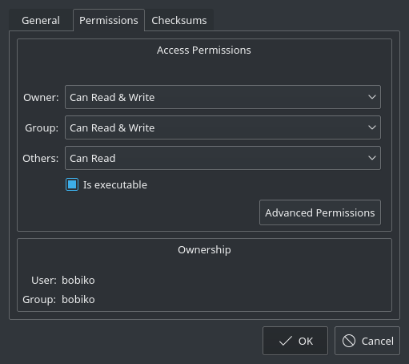
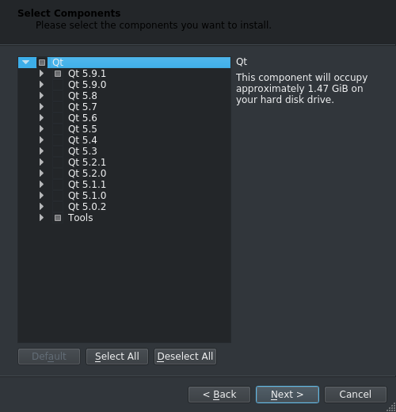
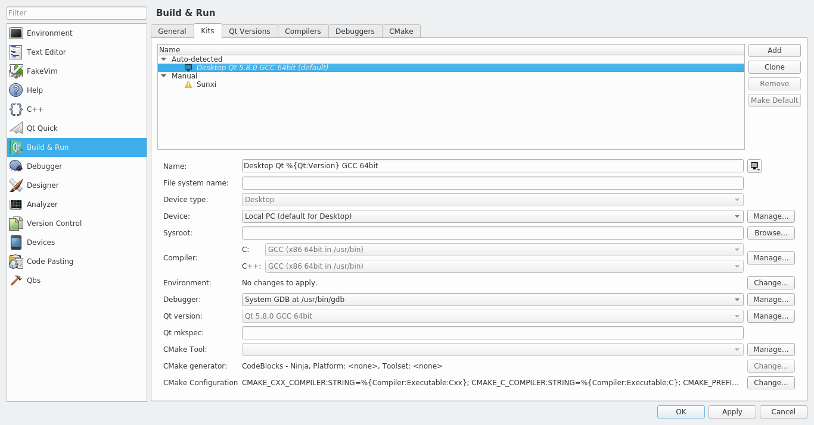
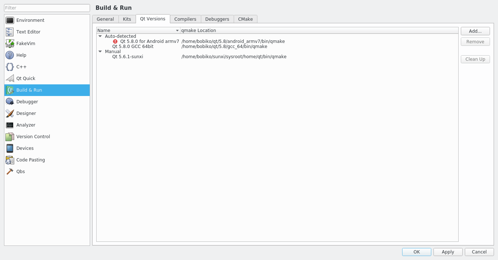
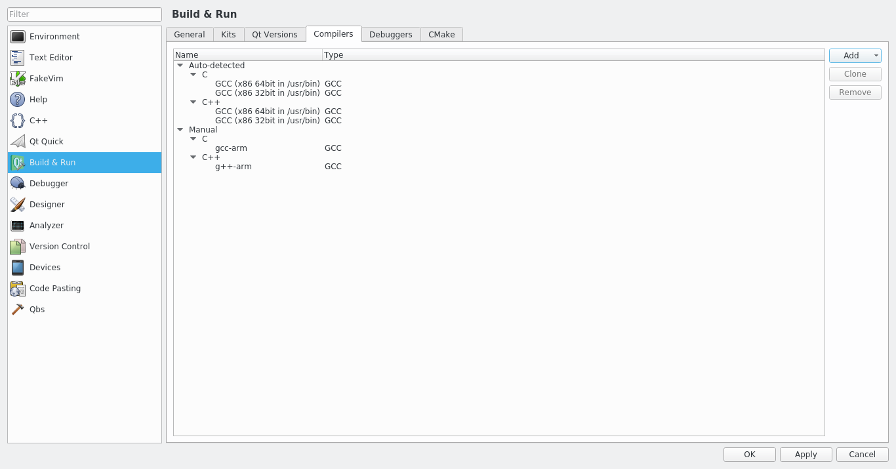

Qt installation¶
Let’s first start with installation of Qt and proceed with trying it out by creating a simple hello world project:
Note
Installation will use approx. 1.47GiB of disk space.
1. Go to Qt download pageand download Qt by picking open source version.
2. After downloading installer run it. Linux users need to add permission for execution. For that, right click on file -> Properties -> set flag on ‘is executable’, than it should become executable.
- You can skip creating a Qt account or, obviously, create one.
- Choose the path you would like to install Qt
5. On selecting components page pick the latest version of Qt (5.9.1 at the moment) and Tools.
- Install it!
If everything went good, you shall be able to start Qt Creator. Now, let’s set up the build configuration.
Setting up the build configuration¶
Before you can start using Qt you need to ensure that the build configuration isset properly. Long story short, configuration includes selection of a compilerand a version Qt libraries. A combination of these two components (compiler and Qt version) is called a kit and is a corner stone of cross-compilation. Butwe will get back to it later. Now you ony need to check if the default kit isworking fine. To do that:
1. Start Qt creator.
2. Go to Tools -> Options…
3. Select Build & Run in the menu on the left, then pick tab Kits, and check ifthere is an Auto-detected kit. If there is one, select it and check if both C and C++ compilers are set. If both are set, it means that your kit is properly set and you can skip the rest of this part and start with your first project.
4. If no kit is auto-detected or if auto-dected misses Qt version or compilers,you have to set them up manually.
5. To set up Qt version go to Qt versions tab -> Add… ,go to the Qt installation path and search for qmake file inside that folder. It should somewhere inside folder like 5.9/gcc_64/bin depending on the platform and version used.
6. To set up compilers go to Compilers tab -> Add, select the proper compiler that you use (usually MinGW for Windows and GCC for Linux) and search for gcc and g++ in the system.
After just click ok and that is it! You are ready for your first project!